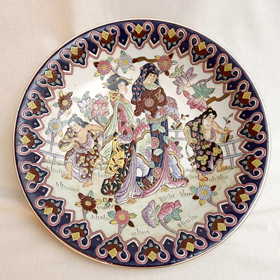

- Tüm ürünler
- indirimli Ürünler
- Sınırlı Stok

China Town tt.
499₺
Japonya'nın Aori şehrinden gelen bu tabak mutfağınızda çok özel karşılanacak

Tikappu Setto
313.31₺
El yapımı zarif Japon bardak seti, estetik tasarımı ve işlevselliği bir araya getirerek içecek deneyiminizi zenginleştiriyor. Bu set, özenle seçilmiş yüksek kaliteli malzemelerle üretilmiş ve her biri farklı bir boyutta olan üç bardaktan oluşuyor. Japonya'nın sekirosundan sofralarınıza gelecek bu set hayatınıza kalite katıcak, Çayınıza değecek.

Nipponjinjosei
745.00₺
Nagoya'nın doğal güzelliklerinden esinlenerek tasarlanmış olan bonsai desenli set, sakinliği ve dinginliği sembolize ediyor. El işçiliğiyle üretilmiş olan bu set, her anı özel kılacak.

5'li Stanpu set
699₺
Kanazawa'nın zengin kültürel mirasından ilham alarak tasarlanmış olan çiçek desenli Stanpu seti, zarafeti ve estetiği bir arada sunuyor. Geleneksel desenlerle modern çizgileri harmanlayan bu kaseler, sunumlarınıza benzersiz bir hava katacak.
Shiroi sora
545.95₺
Tokyo'nun modern ve dinamik ruhunu yansıtan desenleriyle bezenmiş bu yemek takımı, şehrin enerjisini sofralarınıza taşıyor. İnce işçilikle tasarlanmış ve sağlam yapısıyla öne çıkan bu takım, Japon mutfağınızın vazgeçilmez parçalarından olacak.
Seishin karuku
1250.31₺
Fukuoka'nın doğal güzelliklerinden ilham alınarak üretilen porselen çömlek seti, sade ve doğal renkleriyle öne çıkıyor. Sağlam yapısı ve minimalist tasarımıyla kullanımı kolay olan bu set, sofralarınıza doğallık katıyor

Ketoru
445.00₺
Kyoto'nun geleneksel çömlekçilik sanatından ilham alınarak üretilen bu seramik çay seti, incelikli detayları ve doğal renkleriyle Japon geleneğini sofralarınıza taşıyor. Çay keyfinizi ritüele dönüştüren bu set, Zen estetiği ve kaliteyi bir araya getiriyor.
Choshoku
890.49₺
Osaka'nın canlı ve neşeli atmosferinden esinlenerek tasarlanmış olan seramik kahvaltılık seti, renkli desenleriyle dikkat çekiyor. Misafirlerinizi ağırlarken veya kendi keyif anlarınızda kullanabileceğiniz bu set, sofranıza neşe katacak.
Saru no sekai
2100.00₺
Sapporo'nun modern atmosferinden ilham alınarak tasarlanmış olan sushi tabağı seti, minimalist çizgileriyle öne çıkıyor. Sunumlarınız için ideal olan bu set, şıklığı ve kullanışlığı bir arada sunuyor.